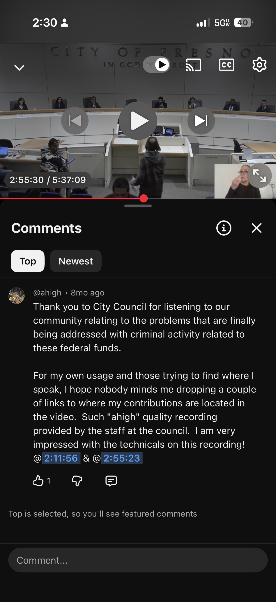
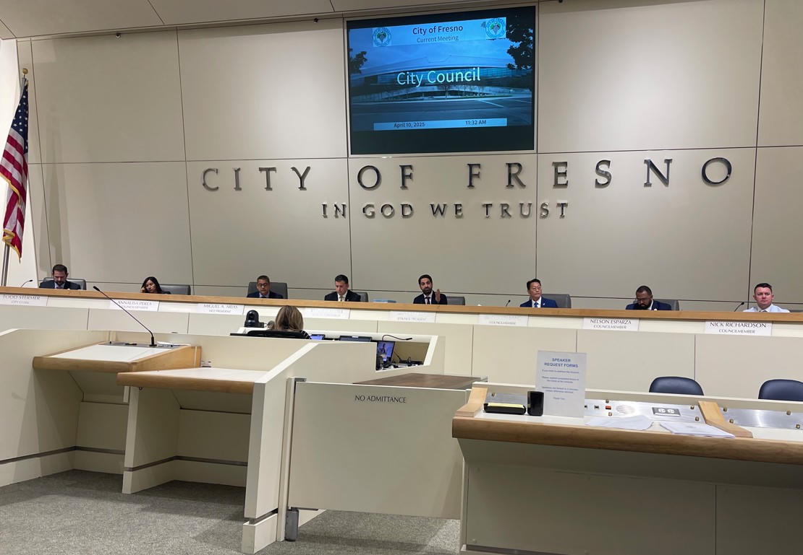

On December 4, 2025, during the regular meeting of the Fresno City Council, public comment was taken on the hearing for community needs in the development of the 2026–2027 Annual Action Plan for federal funding through the U.S. Department of Housing and Urban Development (HUD CPD).
Two contributions from the High Tower District were recorded. The second appears at the 2:55:23 mark of the official recording.
Watch from the exact moment
Starts automatically at 2:55:23 · Full meeting length 5:37:09
Meeting Context
Community needs for the 2026–2027 Annual Action Plan (HUD CPD federal funds)
Problems related to criminal activity being addressed with those federal funds
2:55:23 into the recording (video timestamp shown at 2:55:30 in the original capture)
City of Fresno Council, Boards, and Commissions official YouTube channel
From the YouTube comment left the same day
“Thank you to City Council for listening to our community relating to the problems that are finally being addressed with criminal activity related to these federal funds.”
— @ahigh · December 4, 2025


Sources
- Fresno City Council Meeting 12/4/25 — Official recording, City of Fresno Council, Boards, and Commissions (5:37:09)
- Direct link to 2:55:23 — Second public comment timestamp
- Meeting date: Thursday, December 4, 2025 · 9:00 a.m. · Council Chambers, Fresno City Hall
- Relevant hearing: ID 25-1346 — Public comments on community needs for the 2026–2027 Annual Action Plan (HUD CPD)
Why it matters
Local government works when residents show up and speak on the record. The December 4 hearing gave the community a formal channel to name problems tied to federal funding streams. Documenting the exact moment keeps the contribution findable and usable for anyone who wants to hear it without scrubbing through five and a half hours of video.
High Tower District stories exist to make those moments permanent, searchable, and shareable.